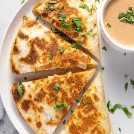

This chicken quesadilla recipe is great to make for parties.
Zesty chicken, cooked peppers, and melted cheese are a delightful combination cut in to wedges and serve with sour cream and salsa.
This cheesy quesadilla recipe features Mexican spices, colorful veggies and tons of delcious flavor.
Total time for this Recipe should be around 45 minutes (Prep time: approx. 20 mins & Cook time: approx. 25 mins). This recipe yeilds 10 servings.
A quesadilla is a Mexican dish that consists of a tortilla filled with cheese amongst other ingredients like veggies or meat.
It's cooked on a griddle or stove. Full quesadillas feature cheese sandwiched between two flat tortillas.
Half quesadillas, like the one in this recipe, is a single tortilla that has been topped with fillings and folded in to a half moon shape.
- 1 pound skinless, boneless chicken breast, diced
- 1 packet fajita seasoning (1.27 ounce)
- 1 tablespoon vegetable oil
- 2 green bell peppers, chopped
- 2 red bell peppers, chopped
- 1 onion, chopped
- 10 flour tortillas
- 1 package shredded Cheddar cheese (8 ounce)
- 1 pacakge shredded Monterey Jack cheese (8 ounce)
- 1 tablespoon Bacon Bits
- Gather Ingredients, preheat the broiler, and lightly grease a baking sheet.
-
Mix the diced chicken with fajita seasoning, then spread onto the prepared baking sheet.
Place under the broiler and cook until chicken is cooked through and no longer pink in the center, about 5 minutes
- Preheat the oven to 350℉ (175℃)
- Heat oil in a large saucepan over medium heat. Stir in bell peppers, onion and broiled chicken.
Cook and stir until vegetables have softened, about 10 minutes.
- Layer half of each tortilla with chicken and vegetable mixture, Cheddar cheese, Monterey Jack cheese, and Bacon Bits.
- Fold tortillas in half and place onto a baking sheet.
- bake quesadillas in the preheated oven until cheeses have melted, about 10 minutes. Cut each quesadilla into wedges.
- Serve with sides of salsa and sour cream.
- Enjoy!